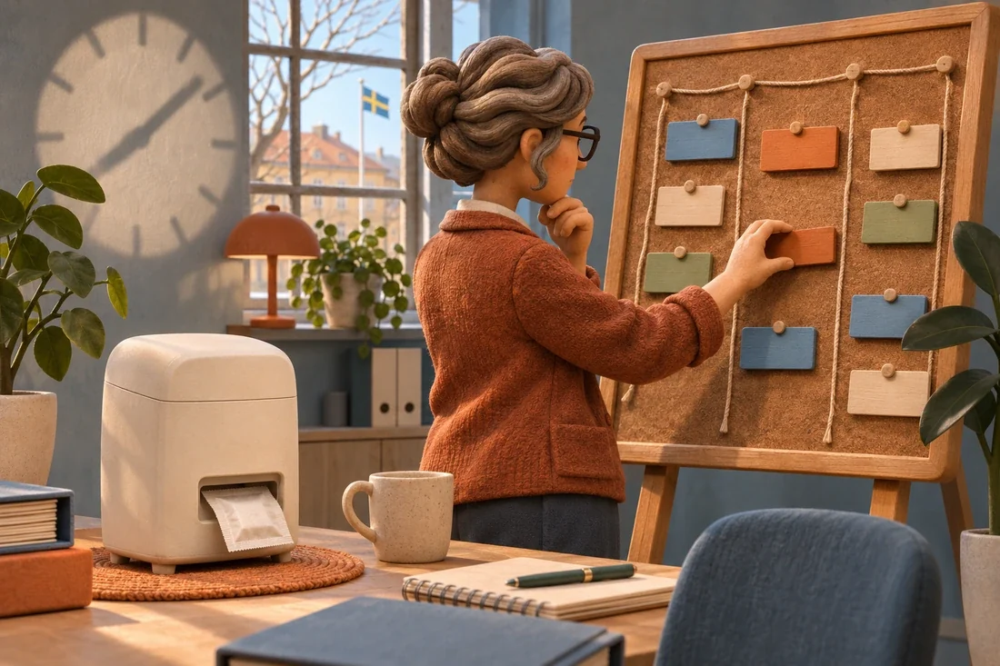

Om bilden
Klockskuggan står för den återkommande uppgiften. Planeringstavlan visar hur ett nytt verktyg kan förändra vilka uppgifter som behöver fördelas och följas upp. Scenen är fiktiv och visar varken en verklig verksamhet eller ett resultat från studien.
Timmen
När automaten tar en uppgift får någon annan en ny
En läkemedelsautomat kan hjälpa en person att ta sina mediciner på utsatt tid. För hemtjänsten är det lätt att se vilken uppgift som kan försvinna: att åka dit för just den dosen. Svårare är att se allt som måste fungera runt apparaten. Vem utbildar personalen? Vem tar emot signalen om något inte fungerar? Och vem följer upp om den som får stödet märker någon förbättring?
Det är den sortens frågor Umeå universitet lyfter i en forskningspresentation som publicerades i dag kl. 08.30. Den sammanfattar Maria Forsgrens avhandling om ledarskap när socialtjänsten inför automatisering. Disputationen är planerad till fredag den 27 november. Det nya den här morgonen är universitetets samlade presentation av avhandlingen, inte att samtliga delstudier publicerades i dag.
Det osynliga arbetet runt apparaten
I en delstudie intervjuade Forsgren och hennes kollegor 31 personer med olika roller i hemtjänstens arbete i två svenska kommuner. De beskrev bland annat hur viktigt det var att chefen kunde förklara syftet, ordna utbildning och lyssna när personalen upptäckte problem i vardagen. Det behövdes också samarbete mellan personer med olika ansvar. Intervjuerna säger något om vad som behövde ordnas när tekniken kom på plats. De mäter inte hur mycket tid kommunen sparade eller om omsorgen blev bättre.
Studien fångar också skillnaden mellan att vänta på att någon säger till och att aktivt fråga vad som krånglar. Forskarna beskriver hur avsaknaden av ett systematiskt sätt att fånga upp erfarenheter kunde göra det svårare att se brukarens behov och upptäcka problem med tekniken eller arbetsfördelningen.
En annan delstudie, en enkät med 6 508 socialarbetare, ger skäl att vara försiktig med slutsatsen att gott ledarskap automatiskt skapar en positiv inställning till robotar och AI. I hela gruppen fann forskarna inget positivt samband mellan det upplevda stödet vid införandet och inställningen. Bland dem som mött sådan teknik på jobbet hängde ett starkare upplevt stöd däremot ihop med en mer positiv inställning. Eftersom svaren samlades in vid ett tillfälle kan studien inte visa att ledarskapet förändrade attityderna. En läkemedelsautomat är dessutom inte nödvändigtvis ett AI-system.
Den statliga utredningen Digital teknik på lika villkor ger ett annat perspektiv. Den lyfter att kraven på god kvalitet och systematisk uppföljning gäller också när en insats ges med digital teknik. Då blir den praktiska frågan inför ett inköp inte bara vilken uppgift apparaten kan göra. Det gäller också att veta vems arbete som förändras och hur verksamheten ska märka om hjälpen fungerar för den som behöver den.